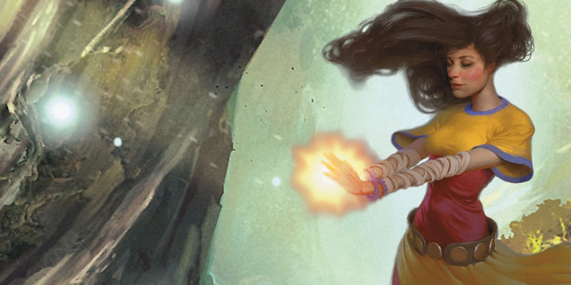

Traditions monastiques
Au niveau 3, un moine gagne la capacité Tradition monastique. Voici de nouvelles options de traditions :
- Voie du kensei
- Voie de la tranquillité
- Voie du maître ivre
- Voie du double astral
- Voie de la miséricorde
- Voie du dragon ascendant
Voie du kensei
Version officielle du Xanathar's Guide to Everything de cette sous-classe publiée initialement dans la rubrique Unearthed Arcana.
Les moines de la voie du kensei s'entraînent sans relâche avec leurs armes, au point que celles-ci deviennent comme des extensions de leur corps. Fondée sur une maîtrise du combat à l'épée, la tradition s'est depuis élargie pour inclure de nombreuses armes différentes. Un kensei a le même rapport avec une arme qu'un peintre avec un pinceau ou un écrivain avec une plume. Quelle que soit son arme, un kensei la voit comme un outil pour exprimer la beauté et l'élégance des arts martiaux. Qu'une telle maîtrise fasse du kensei un guerrier sans pareil n'est que la conséquence secondaire d'une intense dévotion, pratique et étude.
Voie du kensei
Lorsque vous choisissez cette tradition au niveau 3, votre formation spéciale en arts martiaux vous amène à maîtriser l'utilisation de certaines armes. Cette voie vous forme également aux traits habiles de la calligraphie ou de la peinture. Vous obtenez les avantages suivants :
Armes de kensei. Choisissez deux types d'armes qui seront vos armes de kensei : une arme de corps à corps et une arme à distance. Chacune de ces armes peut être une arme courante ou une arme de guerre qui n'a pas la propriété lourde ni spéciale. L'arc long est également un choix valable. Vous obtenez la maîtrise de ces armes si vous ne l'avez pas déjà. Vous considérez les armes choisies comme des armes de moine. De nombreuses capacités de cette tradition monastique ne fonctionnent qu'avec vos armes de kensei. Lorsque vous atteignez les niveaux 6, 11 et 17 dans cette classe, vous pouvez choisir un autre type d'armes (de corps à corps ou à distance) qui sera une nouvelle arme kensei pour vous, toujours selon les critères ci-dessus.
Parade agile. Si vous réalisez une attaque à mains nues durant l'action Attaquer à votre tour et que vous tenez en main une arme de kensei, vous pouvez utiliser cette arme pour vous défendre si c'est une arme de corps à corps. Vous gagnez un bonus de +2 à la CA jusqu'au début de votre prochain tour tant que vous n'êtes pas incapable d'agir et que l'arme est dans votre main.
Tir de kensei. Vous pouvez utiliser une action bonus à votre tour pour rendre vos attaques à distance avec une arme de kensei plus mortelle. Dans ce cas, toute cible que vous touchez avec une attaque à distance en utilisant une arme de kensei subit 1d4 dégâts supplémentaires du type de l'arme. Vous conservez cet avantage jusqu'à la fin du tour en cours.
Voie du pinceau. Vous gagnez la maîtrise du matériel de calligraphe ou du matériel de peintre.
Uni avec la lame
Au niveau 6, vous étendez votre ki à vos armes de kensei, ce qui vous donne les avantages suivants.
Armes de kensei magiques. Vos attaques réalisées avec vos armes de kensei comptent comme étant magiques pour ce qui est de surmonter la résistance et l'immunité aux attaques et dégâts non magiques.
Frappe habile. Lorsque vous touchez une cible avec une arme de kensei, vous pouvez dépenser 1 point de ki pour que l'arme inflige à la cible des dégâts supplémentaires égaux à votre dé d'Arts martiaux. Vous ne pouvez utiliser cette capacité qu'une seule fois à chacun de vos tours.
Lame affûtée
Au niveau 11, vous gagnez la capacité d'améliorer l'efficacité de vos armes avec votre ki. Par une action bonus, vous pouvez dépenser jusqu'à 3 points de ki pour accorder à une arme de kensei que vous touchez un bonus aux jets d'attaque et de dégâts lorsque vous attaquez avec. Ce bonus est égal au nombre de points ki que vous dépensez. Il dure 1 minute ou jusqu'à ce que vous utilisiez cette capacité de nouveau. Cette capacité n'a pas d'effet sur une arme magique qui possède déjà un bonus à l'attaque et aux dégâts.
Précision infaillible
Au niveau 17, votre maîtrise des armes vous octroie une précision extraordinaire. Si vous faites un jet d'attaque avec une arme de moine à votre tour et que vous manquez, vous pouvez relancer le jet. Vous ne pouvez utiliser cette capacité qu'une seule fois à chacun de vos tours.
Voie de la tranquillité
Les moines suivant la voie de la tranquillité voient la violence comme le dernier recours. Ils utilisent la diplomatie, la miséricorde et la compréhension pour résoudre les conflits. Mais lorsque le combat devient inévitable, ils se révèlent être de puissants guerriers, capables de venir à bout des injustes et des cruels qui refusent d'entendre raison. Lorsqu'ils partent à l'aventure, ces moines font d'excellents diplomates. Ils sont également habiles dans les arts de la guérison, et peuvent préserver leurs alliés face à des ennemis intimidants.
Voie de la tranquillité
Lorsque vous choisissez cette tradition au niveau 3, vous devenez un îlot de calme, même dans les situations les plus chaotiques. Grace à cette capacité, vous pouvez lancer le sort sanctuaire sur vous-même sans avoir besoin d'aucun composant, et il dure jusqu'à 8 heures. Le DD du jet de sauvegarde est de 8 + votre bonus de maîtrise + votre modificateur de Sagesse. Une créature qui réussit le jet de sauvegarde est immunisée à l'effet du sanctuaire pendant 1 heure. Une fois le sort lancé de cette façon, vous ne pouvez le lancer à nouveau pendant 1 minute.
Mains guérisseuses
Votre toucher mystique peut soigner les blessures. À partir du niveau 3, vous avez une réserve de magie guérisseuse qui se remplit après chaque repos long. Avec cette réserve vous pouvez restaurer un nombre de points de vie égal à 10 x votre niveau de moine. Par une action, vous pouvez toucher une créature et puiser dans la réserve magique pour lui restaurer des points de vie, jusqu'à vider la réserve complètement. Au lieu de soigner une créature, vous pouvez dépenser 5 points pour guérir une créature d'une maladie ou neutraliser un poison qui l'affecte. Vous pouvez guérir plusieurs maladies et plusieurs poisons avec une seule utilisation de Mains guérisseuses mais vous devez dépenser les 5 points séparément pour chacune d'entre elle. Lorsque vous utilisez votre Déluge de coups, vous pouvez remplacer une des attaques à mains nues par cette capacité. Cette capacité n'a aucun effet sur les morts-vivants et les artificiels.
Émissaire de la paix
Au niveau 6, vous gagnez la possibilité de désarmer les situations violentes. Chaque fois que vous faites un jet de Charisme pour calmer des émotions violentes ou pour donner un conseil de paix, vous avez un avantage au jet. Vous devez faire cette proposition de bonne foi ; cela ne s'applique pas si le bonus de maîtrise de Tromperie ou d'Intimidation applique au jet. Vous gagnez également la maîtrise de Représentation ou Persuasion (selon votre choix).
Apaiser les feux de la discorde
Au niveau 11, vous gagnez la possibilité d'éteindre temporairement les pulsions violentes d'une créature. Par une action, vous pouvez toucher une créature et celle-ci doit alors faire un jet de sauvegarde de Sagesse avec un DD égal à 8 + votre bonus de maîtrise + votre modificateur de Sagesse. La cible réussit automatiquement s'il lui manque des points de vie. Si la cible rate son jet de sauvegarde, elle ne peut plus attaquer pendant 1 minute. Pendant ce temps, elle ne peut pas non plus lancer de sorts qui infligent des dégâts ou qui imposeraient à quelqu'un de faire un jet de sauvegarde. Cet effet prend fin si la cible est attaquée, reçoit des dégâts, ou si elle est forcée de faire un jet de sauvegarde ou est témoin d'une de ces choses sur un de ses alliés.
Colère d'une belle âme
Au niveau 17, vous gagnez la possibilité de venger la victime d'une violence. Si vous voyez une autre créature réduire une cible à 0 point de vie, vous pouvez utiliser votre réaction pour vous accorder un bonus aux dégâts contre l'agresseur jusqu'à la fin de votre prochain tour. Le bonus est égal à votre niveau de moine. Une fois que vous avez utilisé cette capacité, vous devez terminer un repos court ou long avant de pouvoir l'utiliser à nouveau.
Voie du maître ivre
Version officielle du Xanathar's Guide to Everything de cette sous-classe publiée initialement dans la rubrique Unearthed Arcana.
La voie du maître ivre enseigne à ses élèves à se mouvoir avec des mouvements brusques et imprévisibles, comme un ivrogne. Un maître ivre chancelle sur ses pieds instables, donnant l'image d'un combattant incompétent, mais qui déroutera ses attaquants. Les trébuchements erratiques du maître ivre cachent une danse soigneusement exécutée composée de blocages, de parades, d'avances, d'attaques et de retraites. Un maître ivre aime souvent jouer au fou pour apporter de la joie au déprimé ou pour enseigner l'humilité à l'arrogant, mais en combat le maître ivre peut être un ennemi redoutable.
Maîtrise supplémentaire
Lorsque vous choisissez cette tradition au niveau 3, vous gagnez la maîtrise de la compétence Représentation si vous ne l'avez pas déjà. Votre technique d'arts martiaux est un mélange d'entraînement martial et de singeries de bouffon avec la précision d'un danseur. Vous gagnez également la maîtrises du matériel de brasseur si vous ne l'avez pas déjà.
Technique de l'ivrogne
Au niveau 3, vous apprenez à vous retourner rapidement dans le cadre de votre Déluge de coups. Chaque fois que vous utilisez Déluge de coups, vous bénéficiez des effets de l'action Se désengager et votre vitesse de marche augmente de 3 mètres jusqu'à la fin du tour actuel.
Balancement ivre
À partir du niveau 6, vos balancements en combat deviennent complètement imprévisibles. Vous obtenez les avantages suivants :
Se remettre sur pied. Lorsque vous tombez à terre, vous pouvez vous relever en dépensant 1,50 mètre de mouvement au lieu de la moitié de votre vitesse.
Rediriger une attaque. Quand une créature vous manque lors d'une attaque au corps à corps, vous pouvez dépenser 1 point de ki en réaction pour que cette attaque touche une créature de votre choix, autre que l'attaquant, que vous pouvez voir à 1,50 mètre ou moins de vous.
Chance de l'ivrogne
À partir du niveau 11, vous semblez toujours avoir de la chance au bon moment pour vous sauver. Lorsque vous faites un jet de caractéristique, d'attaque ou de sauvegarde avec un désavantage, vous pouvez dépenser 2 points de ki pour annuler un désavantage lors de ce jet.
Frénésie ivre
Au niveau 17, vous gagnez la capacité de réaliser un grand nombre d'attaques contre un groupe d'ennemis. Lorsque vous utilisez Déluge de coups, vous pouvez faire jusqu'à trois attaques supplémentaires (jusqu'à un total de cinq attaques de Déluge de coups), à condition que chaque attaque du Déluge de coups frappe une créature différente durant ce tour.
Voie du double astral
Les moines suivant la voie du double astral sont en lutte interne avec leur ki. Ils voient leur énergie mystique comme une représentation de leur véritable forme, comme un double astral. Cette forme peut être une force du bien ou de la destruction et certains apprentis moines tempèrent leur nature tandis que d'autres embrassent leurs impulsions.
Bras du double astral
FORME DE VOTRE DOUBLE ASTRAL
Le double astral est une incarnation translucide de la psyché et de l'âme du moine. Ainsi, la forme du double astral reflète l'esprit du moine qui l'invoque. Votre double astral pourrait être un chevalier humanoïde à la face masquée par son casque et aux larges bras musclés ou bien une forme de métal doré avec des bras, comme par exemple un monodrone.
Quand vous choisissez cette voie, réfléchissez aux manies qui peuvent définir votre moine. Est-il obsédé par quelque chose ? Est-il guidé par la justice ou par ses désirs personnels ? Chacune de ses caractéristiques peut se manifester dans la forme de son double astral.
Au niveau 3, votre maîtrise du ki vous permet d'invoquer une portion de votre double astral. À votre tour, vous pouvez dépenser 2 points ki par une action bonus pour invoquer les bras de votre double astral pendant 10 minutes. Ces bras spectraux flottent près de vos épaules. Vous décidez de l'apparence des bras, en fonction des caractéristiques de votre personnage. Tant que les bras astraux sont invoqués, vous gagnez les avantages suivants :
- Vous pouvez utiliser votre modificateur de Sagesse à la place de votre modificateur de Force quand vous effectuez un jet de Force ou un jet de sauvegarde de Force.
- Les bras sont des armes de moines et ont une allonge de 3 mètres. Les bras font des dégâts radiants ou nécrotiques (selon votre choix). De plus, quand vous attaquez avec les bras, vous pouvez utiliser votre modificateur de Sagesse à la place de votre modificateur de Force ou de Dextérité pour les jets d'attaque et de dégâts.
- Immédiatement après que vous ayez utilisé l'action Attaquer avec vos bras astraux, à votre tour, vous pouvez faire une attaque supplémentaire avec vos bras astraux par une action bonus. Le nombre d'attaques supplémentaires augmente quand vous atteignez certains niveaux dans cette classe ; il passe à deux au niveau 11 et à trois au niveau 17.
Visage du double astral
À partir du niveau 6, vous pouvez invoquer le visage de votre double astral. À votre tour, vous pouvez dépenser 1 point ki par une action bonus, ou l'intégrer à l'invocation des bras astraux, pour invoquer ce visage pendant 10 minutes. Le visage spectral couvre votre face comme un casque ou un masque. Vous décidez de l'apparence du visage, en fonction des caractéristiques de votre personnage. Tant que le visage astral est invoqué, vous gagnez les avantages suivants :
Sagesse de l'esprit. Vous avez un avantage aux jets de Sagesse (Intuition) et Charisme (Intimidation).
Vue astrale. Vous pouvez voir normalement dans les ténèbres, quelles soient magiques ou non, sur une distance de 36 mètres.
Éveil du double astral
À partir du niveau 11, vous exploitez une part plus importante du pouvoir de votre double astral. Quand vous avez à la fois vos bras et votre visage astraux invoqué, vous gagnez les avantages suivants :
Déviation d'énergie. Quand vous subissez des dégâts d'acide, de froid, de feu, de foudre ou de force, vous pouvez utiliser votre réaction pour les dévier. Les dégâts sont alors réduits de 1d10 + votre modificateur de Sagesse + votre niveau de moine.
Bras puissants. Une fois par tour, quand vous touchez une cible avec vos bras astraux, vous pouvez infliger à la cible des dégâts supplémentaires égaux à votre dé d'Arts martiaux.
Mot de l'esprit. Quand vous parlez à travers votre visage astral, vous pouvez diriger vos paroles vers une créature de votre choix, que vous pouvez voir, à 9 mètres ou moins de vous. Seule cette créature peut vous entendre. Vous pouvez aussi amplifier votre voix de manière à ce que toutes les créatures dans un rayon de 180 mètres puissent vous entendre.
Double astral complet
À partir du niveau 17, votre connexion au double astral est parfaite, vous permettant de l'invoquer entièrement. À votre tour, vous pouvez dépenser 10 points ki par une action bonus pour invoquer les bras, le visage et le corps de votre double astral pendant 10 minutes. Ce corps spectral couvre votre forme physique comme une armure, connectée avec les bras et le visage. Vous déterminez son apparence en fonction des caractéristiques de votre personnage. Tant que votre double astral est invoqué, vous gagnez les avantages suivants :
Armure de l'esprit. Vous gagnez un bonus de +2 à la CA si vous n'êtes pas incapable d'agir.
Barrage Astral. Chaque fois que vous utilisez la capacité Attaque supplémentaire pour attaquer deux fois, vous pouvez ai lieu de cela attaquer trois fois en utilisant vos bras astraux.
Consommation de ki. Quand une créature dans un rayon de 3 mètres est réduite à 0 point de vie, vous pouvez utiliser votre réaction pour regagner un nombre de points ki égal à votre modificateur de Sagesse (minimum 1).
Voie de la miséricorde
Version officielle du Tasha's Cauldron of Everything de cette sous-classe publiée initialement dans la rubrique Unearthed Arcana.
Les moines de la voie de la miséricorde apprennent à manipuler la force vitale des autres pour apporter de l'aide à ceux qui en ont besoin. Ce sont des médecins errants pour les pauvres et les blessés. Cependant, à ceux qu'ils ne peuvent aider, qu'ils soient malades ou mauvais, ils apportent une fin rapide, comme un acte de miséricorde. Ceux qui suivent cette voie peuvent être d'humbles membres d'un ordre religieux, dispensant leurs services à ceux qui en ont le plus besoin tout en faisant de sombres choix ancrés dans la réalité plutôt que dans l'idéalisme. Certains sont des guérisseurs à la voix douce, aimés de leur communauté, tandis que d'autres sont les exécutants masqués de macabres miséricordes. Ces moines portent généralement des vêtements de cérémonies simples avec de grands capuchons et ils cachent souvent leur visage avec des masques, se présentant comme les porteurs sans visage de la vie et de la mort.
Instruments de miséricorde
Capacité de la voie de la miséricorde de niveau 3
Vous maîtrisez les compétences Intuition et Médecine, ainsi que le kit d'herboriste. Vous obtenez également un masque spécial, que vous portez souvent lorsque vous utilisez les capacités de cette sous-classe. Vous choisissez son apparence, ou vous la déterminez au hasard avec la table suivante.
| d6 | Apparence du masque |
| 1 | Corbeau |
| 2 | Blanc et noir |
| 3 | Visage qui pleure |
| 4 | Visage qui rie |
| 5 | Crâne |
| 6 | Papillon |
Main guérisseuse
Capacité de la voie de la miséricorde de niveau 3
Votre toucher mystique peut soigner les blessures. Au prix d'une action, vous pouvez dépenser 1 point de ki pour toucher une créature et lui restaurer un nombre de points de vie égal à un jet de votre dé d'Arts martiaux + votre modificateur de Sagesse. Si vous utilisez Déluge de coups, vous pouvez remplacer l'une des frappes à mains nues par une utilisation de cette capacité sans dépenser un point de ki pour guérir.
Main contaminante
Capacité de la voie de la miséricorde de niveau 3
Vous utilisez votre ki pour infliger des blessures. Lorsque vous touchez une créature lors d'une attaque à mains nues, vous pouvez dépenser 1 point de ki pour infliger un nombre de dégâts nécrotiques égal à un jet de votre dé d'Arts martiaux + votre modificateur de Sagesse. Vous ne pouvez utiliser cette capacité qu'une seule fois à chacun de vos tours.
Toucher du médecin
Capacité de la voie de la miséricorde de niveau 6
Vous pouvez administrer des remèdes encore plus puissants par le toucher mais, si vous le jugez nécessaire, vous pouvez aussi utiliser vos connaissances pour nuire. Lorsque vous utilisez Main guérisseuse sur une créature, vous pouvez également mettre fin à une maladie ou à l'une des conditions suivantes qui affectent la créature : aveuglé, assourdi, paralysé, empoisonné ou étourdi. Lorsque vous utilisez Main contaminante sur une créature, vous pouvez infliger à la créature la condition empoisonnée jusqu'à la fin de votre prochain tour.
Déluge de guérison et de contamination
Capacité de la voie de la miséricorde de niveau 11
Vous pouvez maintenant provoquer un déluge de réconfort ou de souffrance. Lorsque vous utilisez Déluge de coups, vous pouvez désormais remplacer chacune des frappes à mains nues par une utilisation de votre Main guérisseuse, sans dépenser un point de ki pour guérir. De plus, lorsque vous frappez à mains nues avec Déluge de coups, vous pouvez utiliser Main contaminante avec cette frappe sans dépenser le point de ki de Main contaminante. Vous ne pouvez toujours utiliser Main contaminante qu'une seule fois par tour.
Main de l'ultime miséricorde
Capacité de la voie de la miséricorde de niveau 17
Votre maîtrise de l'énergie vitale ouvre la porte de l'ultime miséricorde. Au prix d'une action, vous pouvez toucher le corps d'une créature morte dans les dernières 24 heures et dépenser 5 points de ki. La créature revient alors à la vie, récupérant un nombre de points de vie égal à 4d10 + votre modificateur de Sagesse. Si la créature est morte alors qu'elle était soumise à l'une des conditions suivantes, elle ressuscite sans celles-ci : aveuglé, assourdi, paralysé, empoisonné et étourdi. Une fois que vous avez utilisé cette capacité, vous devez terminer un repos long avant de pouvoir l'utiliser à nouveau.
Voie du dragon ascendant
Les moines qui suivent la voie du dragon ascendant vénèrent la puissance et la grandeur des dragons. Ils modifient leur propre ki pour résonner avec la puissance draconique, le canalisant pour augmenter leurs prouesses au combat, voler dans les airs et renforcer leurs alliés. En tant que partisan de cette tradition monastique, vous décidez comment vous avez débloqué le pouvoir des dragons grâce à votre ki. La table ci-dessous offre certaines possibilités.
| d6 | Origine |
| 1 | Vous avez perfectionné vos capacités en observant un dragon et en alignant votre ki avec son pouvoir de modification du monde. |
| 2 | Un dragon a personnellement joué un rôle actif dans la formation de votre énergie intérieure. |
| 3 | Vous avez étudié dans un monastère où un dragon a enseigné ces capacités il y a des siècles. |
| 4 | Vous avez passé de longues périodes à méditer dans la région d'influence du repaire d’un dragon ancien absorbant sa magie ambiante. |
| 5 | Vous avez trouvé un parchemin écrit en draconique qui contenait de nouvelles techniques inspirantes. |
| 6 | Après un rêve qui comportait un drakéide à cinq mains, vous vous êtes réveillé avec un ki modifié, reflétant les souffles des dragons. |
Disciple draconique
Capacité de la voie du dragon ascendant de niveau 3
Vous pouvez utiliser votre ki pour imprégner vos frappes à mains nues de l’énergie du souffle d'un dragon. Vous bénéficiez des avantages suivants :
- Lorsque vous infligez des dégâts à une cible avec une frappe à mains nues, vous pouvez changer le type de dégâts en acide, froid, feu, foudre ou poison.
- Si vous ne le pouvez pas déjà, vous apprenez à parler, lire et écrire le draconique.
- Si vous échouez à un jet de Charisme (Intimidation) ou Charisme (Persuasion), vous pouvez utiliser votre réaction pour relancer le jet, alors que vous exploitez la puissante présence des dragons. Une fois que cette capacité a transformé un échec en succès, vous ne pouvez plus l'utiliser avant d'avoir terminé un repos long.
Souffle du dragon
Capacité de la voie du dragon ascendant de niveau 3
Lorsque vous effectuez l'action Attaquer à votre tour, vous pouvez remplacer l'une des attaques par une exhalation d'énergie draconique dans un cône de 6 mètres ou une ligne de 9 mètres de 1,50 mètre de large (à votre choix). Choississez un type de dégâts : acide, froid, feu, foudre ou poison. Toute créature dans la zone doit effectuer un jet de sauvegarde de Dextérité contre votre DD de sauvegarde de ki, subissant des dégâts du type choisi égaux à deux jets de votre dé d'Arts martiaux en cas d'échec, ou la moitié de ces dégâts en cas de réussite. Au niveau 11, les dégâts de votre souffle augmentent à trois jets de votre dé de dégâts d'Arts martiaux. Vous pouvez utiliser cette capacité un nombre de fois égal à votre bonus de maîtrise, et vous récupérez toutes les utilisations dépensées lorsque vous terminez un repos long.
Si vous n'avez plus aucune utilisation disponible, vous pouvez dépenser 1 point de ki pour utiliser de nouveau cette capacité.
Ailes déployées
Capacité de la voie du dragon ascendant de niveau 6
Lorsque vous utilisez votre capacité de Déplacement aérien, vous pouvez déployer des ailes spectrales draconiques de votre dos qui disparaissent à la fin de votre tour. Tant que les ailes existent, vous avez une vitesse de vol égale à votre vitesse de marche. Vous pouvez utiliser cette capacité un nombre de fois égal à votre bonus de maîtrise, et vous récupérez toutes les utilisations dépensées lorsque vous terminez un repos long.
Si vous n'avez plus aucune utilisation disponible, vous pouvez dépenser 1 point de ki pour utiliser de nouveau cette capacité.
Aspect du Grand ver
Capacité de la voie du dragon ascendant de niveau 11
La puissance de votre ki draconique rayonne maintenant de vous, protégeant vos alliés contre le mal et punissant quiconque lève les armes contre eux. Par une action bonus, vous pouvez créer une aura de puissance draconique qui rayonne à 9 mètres de vous pendant 1 minute. Choisissez un type de dégâts parmi acide, de froid, de feu, de foudre ou de poison. Pendant toute la durée, vous bénéficiez des effets suivants :
- Vous et vos alliés au sein de votre aura gagnez une résistance au type de dégâts choisi.
- Des vagues d’énergie destructives émanent de vous et de vos alliés lorsque l'un de vous est attaqué. Lorsque vous ou l'un de vos alliés dans la zone de l'aura êtes touché par une attaque effectuée par une autre créature dans la zone de l'aura, la cible touchée peut utiliser sa réaction pour infliger une quantité de dégâts du type choisi égale à votre dé de dégâts d’Arts martiaux à l'attaquant.
Une fois que vous avez utilisé cette action bonus, vous ne pouvez utiliser cette capacité avant d'avoir terminé un repos long. Si vous n'avez plus aucune utilisation disponible, vous pouvez dépenser 4 points de ki pour utiliser de nouveau cette capacité.
Aspect ascendant
Capacité de la voie du dragon ascendant de niveau 17
Votre ki draconique atteint son apogée. Vous bénéficiez des avantages suivants :
- Vous bénéficiez d'une vision aveugle jusqu'à 9 mètres. Dans cette portée, vous pouvez effectivement voir tout ce qui n'a pas un abri total, même si vous êtes aveuglé ou dans des ténèbres. De plus, vous pouvez voir une créature invisible dans cette portée, à moins que la créature ne réussisse à se cacher de vous.
- Lorsque vous infligez des dégâts à une créature avec votre Souffle du dragon, l'énergie s'accroche à la cible. Au début de chacun des tours de la créature, elle subit des dégâts du type de votre souffle égaux à un jet de votre dé d’Arts martiaux. À la fin de son tour, la créature peut répéter le jet de sauvegarde, mettant fin à l'effet sur elle-même en cas de succès.
- Lorsque vous activez votre Aspect du Grand ver, la fureur draconique explose en vous. Choisissez n'importe quel nombre de créatures que vous pouvez voir dans votre zone d’aura. Ces créatures subissent chacune 4d10 dégâts d'acide, de froid, de feu, de foudre ou de poison (au choix).

Traduit par kevetoile, Ellef13, blueace, Ewylana et mictrepanier